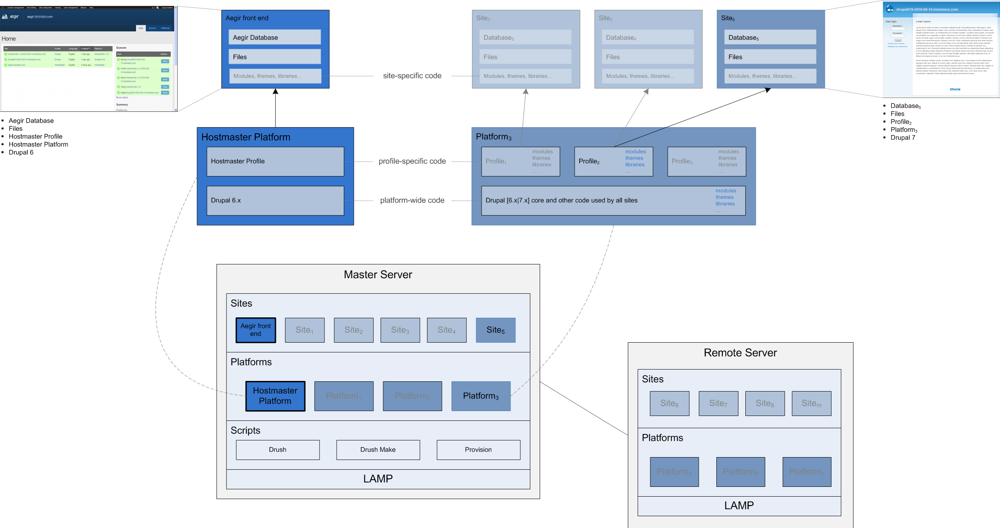

Aegir Architecture
Schematic
Below is a representation of the Aegir architecture in schematic form. It is intented to complement the section further down on the typical file system structure on an Aegir installation.
 Click on image for a larger version.
{kind=link}
File system structure
This section documents the typical file system structure on an Aegir installation. It is intended to complement the Aegir architecture schematic above. The following paths are based on an Aegir 3.x installation and assume that all directories are within the /var/aegir folder.
Scripts and configuration files
| Path | Notes |
|---|---|
~/backups |
Site-specific tar balls containing a database dump and folders under path/to/platform/sites/example.com |
~/config |
|
~/config/server_master |
|
~/config/server_master/apache |
|
~/config/server_master/apache/conf.d |
non-aegir or non-drupal virtual hosts files |
~/config/server_master/apache/platform.d |
contains .htaccess information for each aegir platform |
~/config/server_master/apache/vhost.d |
Apache virtual host files for Aegir sites |
~/config/server_master/apache/vhost.d/aegir.example.com |
Virtual host file for Aegir front-end site - specifies path to platform directory and site database settings (so that database credentials are not exposed directly in site settings.php file) |
~/config/server_master/apache/vhost.d/site-1.com |
virtual host file for deployed web site |
~/config/server_master/apache/vhost.d/site-2.com |
|
~/config/server_master/apache/vhost.d/site-3.com |
|
~/.drush |
Drush extensions and server, platform and site aliases |
~/.drush/provision |
Provision folder |
~/.drush/server_master.alias.drushrc.php |
Settings for the master server where the main aegir database, hosting platform and aegir site reside |
~/.drush/platform_hostmaster.alias.drushrc.php |
Settings for the hostmaster platform on which the aegir site is based |
~/.drush/hostmaster.alias.drushrc.php |
Settings for the Aegir front-end site |
~/.drush/platform_platform1.alias.drushrc.php |
Settings for platform1 on which site-1.com is based |
~/.drush/site-1.com.alias.drushrc.php |
Settings for site-1.com |
Hostmaster platform and Aegir site
| Path | Notes |
|---|---|
~/hostmaster-3.x |
Hostmaster platform |
~/hostmaster-3.x/profiles |
|
~/hostmaster-3.x/profiles/default |
|
~/hostmaster-3.x/profiles/hostmaster/ |
hostmaster profile |
~/hostmaster-3.x/profiles/hostmaster/modules |
|
~/hostmaster-3.x/profiles/hostmaster/modules/contrib/ |
Contrib modules bundled with the distribution |
~/hostmaster-3.x/profiles/hostmaster/modules/aegir |
Aegir core and "Golden Contrib" modules |
~/hostmaster-3.x/profiles/hostmaster/modules/aegir/hosting |
Hosting module – provides core Aegir front-end functionality. |
~/hostmaster-3.x/profiles/hostmaster/themes/ |
|
~/hostmaster-3.x/profiles/hostmaster/themes/eldir |
Eldir theme – provides Aegir front end look and feel |
~/hostmaster-3.x/profiles/hostmaster/hostmaster.profile |
Profile file – used in site provisioning to configure a drupal database |
~/hostmaster-3.x/profiles/hostmaster/build-hostmaster.make |
Stub Drush make file – used to build a working Aegir platform. Includes core and drupal-org.make |
~/hostmaster-3.x/profiles/hostmaster/drupal-org.make |
drupal.org distribution packaging Drush make file – used to build the tarballs hosted on drupal.org. Includes Aegir core and "Golden Contrib" modules, Eldir and contrib modules. |
~/hostmaster-3.x/profiles/hostmaster/hostmaster.make |
Drush make file – This makefile includes drupal-org.make, but overrides the versions to ensure we build from development code instead of the tagged releases. |
~/hostmaster-3.x/sites/ |
|
~/hostmaster-3.x/sites/aegir.example.com |
Aegir front-end site folders |
Deployed Platforms
| Path | Notes |
|---|---|
~/platforms/ |
Technically, the ~/platforms directory is optional. It is however used by convention to separate deployed platforms from directories for scripts, config files and hostmaster platform. |
~/platforms/platform-1/ |
|
~/platforms/platform-1/profiles/ |
|
~/platforms/platform-1/profiles/default/ |
|
~/platforms/platform-1/profiles/custom-profile/ |
|
~/platforms/platform-1/profiles/custom-profile/modules/ |
|
~/platforms/platform-1/profiles/custom-profile/themes/ |
|
~/platforms/platform-1/profiles/custom-profile/custom.profile |
Profile file – used in site provisioning to configure a drupal database |
~/platforms/platform-1/profiles/custom-profile/custom.make |
Drush Make file – used to include modules, themes, libraries etc. from various sources |
~/platforms/platform-1/modules/ |
|
~/platforms/platform-1/themes/ |
|
~/platforms/platform-1/sites/ |
|
~/platforms/platform-1/sites/site-1.com/ |
|
~/platforms/platform-1/sites/site-1.com/modules/ |
|
~/platforms/platform-1/sites/site-1.com/themes/ |
|
~/platforms/platform-1/sites/site-1.com/files/ |
|
~/platforms/platform-1/sites/site-1.com/settings.php |
Site-specific drupal configuration file |
~/platforms/platform-1/sites/site-1.com/drushrc.php |
Site- and Aegir-specific configuration file |
~/platforms/platform-1/sites/site-2.com/ |
|
~/platforms/platform-1/sites/site-3.com/ |
|
~/platforms/platform-1/sites/site-n.com/ |
|
~/platforms/platform-2/ |
|
~/platforms/platform-3/ |
|
~/platforms/platform-n/ |
Ownership and permissions
From the platform root (e.g. ~/platforms/drupal-7.41/):
| Path | Ownership | Permissions | Notes |
|---|---|---|---|
./*/ |
aegir:aegir | drwxr-xr-x | The webserver has no business writing or moving directories in the Drupal codebase. |
./* |
aegir:aegir | -rw-r--r-- | The webserver has no business writing or moving files in the Drupal codebase. |
./sites/all/drush/drushrc.php |
aegir:aegir | -r-------- | Web server shouldn't be able to read drushrc.php, it's not a component of the Drupal platform. |
Inside ./sites/example.com:
| Path | Ownership | Permissions | Notes |
|---|---|---|---|
drushrc.php |
aegir:aegir | -r-------- | Web server shouldn't be able to read drushrc.php, it's not a component of the Drupal site. |
settings.php |
aegir:www-data | -r--r----- | Web server can read this file, but otherwise tight control over this file which can contain sensitive information. |
libraries/ |
aegir:aegir | drwxrwsr-x | |
libraries/* |
aegir:aegir | -rw-r--r-- | Because of the sticky bit (s) on the parent directory, each child directory will inherit attributes of the parent. The attribute that is consistently inherited is the group. This means that a developer in the "aegir" group can add files which will retain the "aegir" group ownership of the parent |
modules/ |
aegir:aegir | drwxrwsr-x | |
modules/* |
aegir:aegir | -rw-r--r-- | Same as libraries/* |
themes/ |
aegir:aegir | drwxrwsr-x | |
themes/* |
aegir:aegir | -rw-r--r-- | Same as libraries/* |
files/ |
aegir:www-data | drwxrws--- | Aegir sets these directories with a sticky bit (s) so that under certain conditions new folders and files will inherit parent permissions. There are only a few cases where this happens though. |
files/*/ |
www-data:www-data | drwxr-sr-x | The permissions shown here are how directories created by www-data will look. When verifying a platform, Aegir won't "correct" these files and directories to match the parents. See the next section if you need to fix file ownership or permissions. |
files/* |
www-data:www-data | -rw-r--r-- | The permissions shown here are how files created by www-data will look. When verifying a platform, Aegir won't "correct" these files and directories to match the parents. See the next section if you need to fix file ownership or permissions. |
private/ |
aegir:www-data | drwxrws--- | Same as files/ |
private/*/ |
www-data:www-data | drwxr-sr-x | Same as files/*/ |
private/* |
www-data:www-data | -rw-r--r-- | Same as files/* |
Fixing ownership and permissions
If you have trouble with permissions/ownership on the files/ or private/ directories, you can safely run the following commands (in this case on the files directory):
# chown -R aegir:www-data /path/to/site/files/*
# chmod -R 775 /path/to/site/files/*